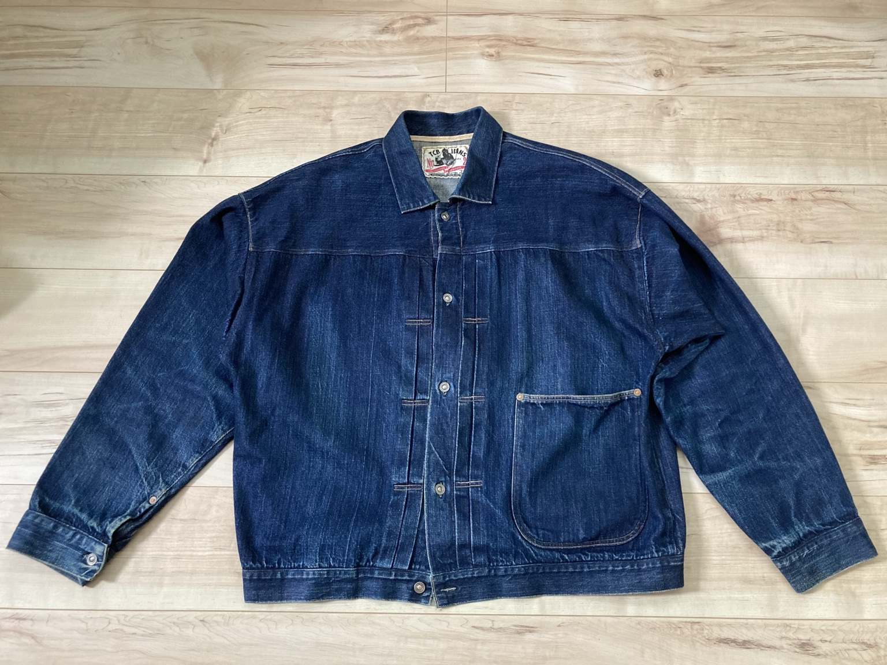
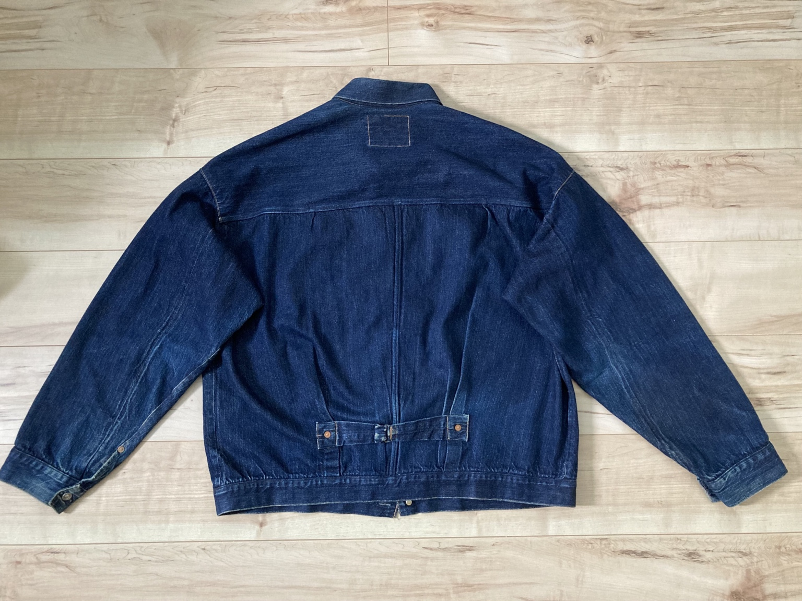
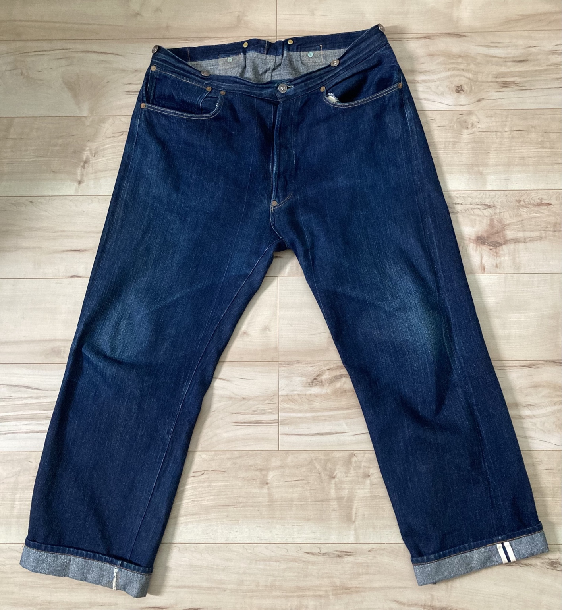
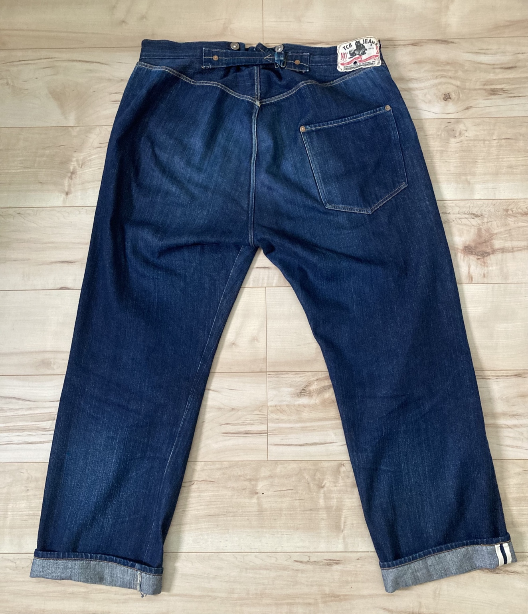

TCB 1890 Jacket
表

裏

DENIM FADE LAB / TCB 1890
2025年4月から実際に着用。表・裏の定点写真と着用・洗濯履歴を長期記録します。
このページでは、TCB 1890 No.2 SETUPのジャケットとジーンズを、 できるだけ同じ場所・同じ構図で撮影し、色落ちと経年変化を記録します。 商品紹介だけではなく、実際の着用条件と写真を残すことを目的としています。
2025年4月からセットアップで週3回程度着用。購入後約1年間は大きな変化が比較的少なかったものの、 その後は太い糸の色落ちが進み、全体的にタテ落ちが目立つようになってきました。
BASELINE
今後の経年変化を比較するための基準写真です。
表

裏

表

裏

| 着用開始 | 2025年4月 |
|---|---|
| 着用頻度 | 週3回程度 |
| 着用方法 | ジャケット・ジーンズを必ずセットアップで着用 |
| 推定着用回数 | 約200回 |
| Jacket サイズ | 46 |
| Jeans サイズ | 36 |
| 洗濯回数 | Jacket 2回 / Jeans 2回 |
| 洗濯方法 | デニム用洗剤につけ置き |
| 乾燥機 | 1回（購入後1回目の洗濯時） |
| 裾の基準 | ジーンズは裾を1回ロールアップした状態を基準として記録 |
| BASELINE | 2026年8月23日 |
BASELINEを起点に、Day 30、Day 90、Day 180、Day 365を目安として、 ジャケットとジーンズの表・裏を同じ条件で撮影します。 着用回数や洗濯回数も更新し、色落ちの進み方を長期的に比較できるようにします。